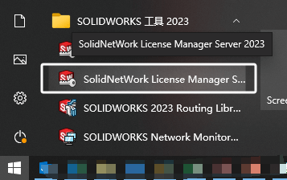
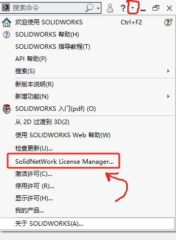
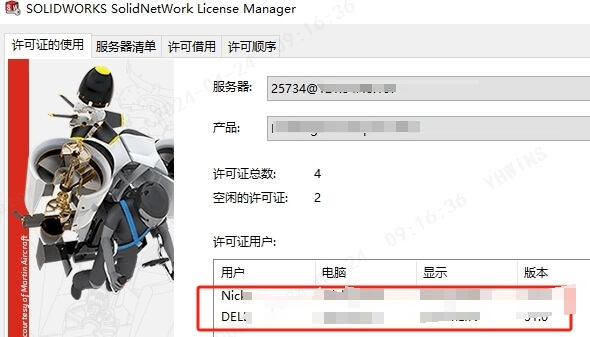
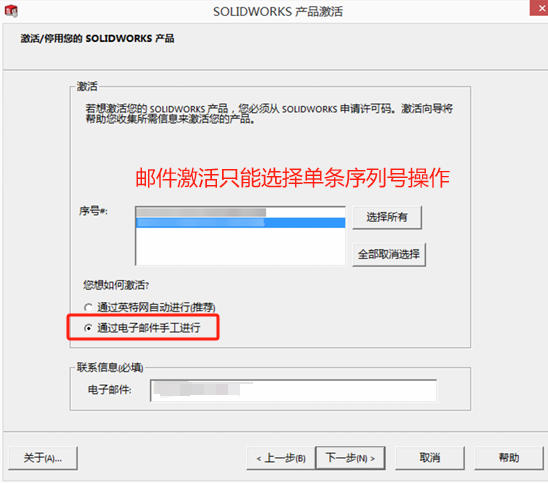
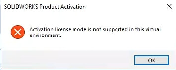

网络版许可激活
激活许可
【开始菜单-SOLIDWORK 工具20XX-SolidNetWork License Manager Server】打开许可管理器程序
并单击“修改”按钮。

选择激活/重新激活您的许可产品

默认下一步即可

选择所以需要再激活的许可“序列号”，下一步。等待再激活过程。

再激活结束后，显示激活/重新激活成功，选择完成，结束再激活操作。

查看许可
SW里的话可以打开程序，在【帮助下拉框-SolidNetWork License Manager】打开许可管理器（客户端）。或者在【开始/菜单-SOLIDWORKS 工具-SolidNetWork License Manager】打开
在许可管理器（客户端）内，可以看到“服务器信息”、“产品信息”、“许可数量”、“被使用的电脑用户”。
离线邮件激活
网络版许可离线邮件激活
获得许可文件
打开License Manager，进入服务器管理页面的许可信息中，点击修改
根据需要选择功能
a)准备更换系统或者更换服务器
b) 在新的电脑上激活；更新许可信息
查看当前机器的许可信息
进入产品激活信息确认，点击下一步
选择要激活的许可，并选择激活方式（邮件激活）
进入到手工激活界面
a) 保存文件，并以附件的型式发邮件到 activation@solidworks.com
b) 等待回复邮件，两分钟左右
c) 收到的附件保存，然后点击打开装入文件，点击下一步即可激活成功
备注：
出现SWConfigureRequest文件，是因为网络许可，首次激活时，实际就是2次，邮件方式就是这样，第一次是配置，第二次是激活。联网方式也是两次，只是很快，没注意
Q&A
虚拟机限制
Q：许可不能在一部分虚拟机上激活
定向激活网址
通常情况下，网络激活是自动的，如果有网络防火墙之类的限制，需要对达索服务器指定的激活网址进行设置时，可以参考下面说法：
您用于向防火墙添加例外情况的 SOLIDWORKS® 激活服务器 URL 是 https://activate.solidworks.com 所有通信使用端口 80（标准互联网通信端口）